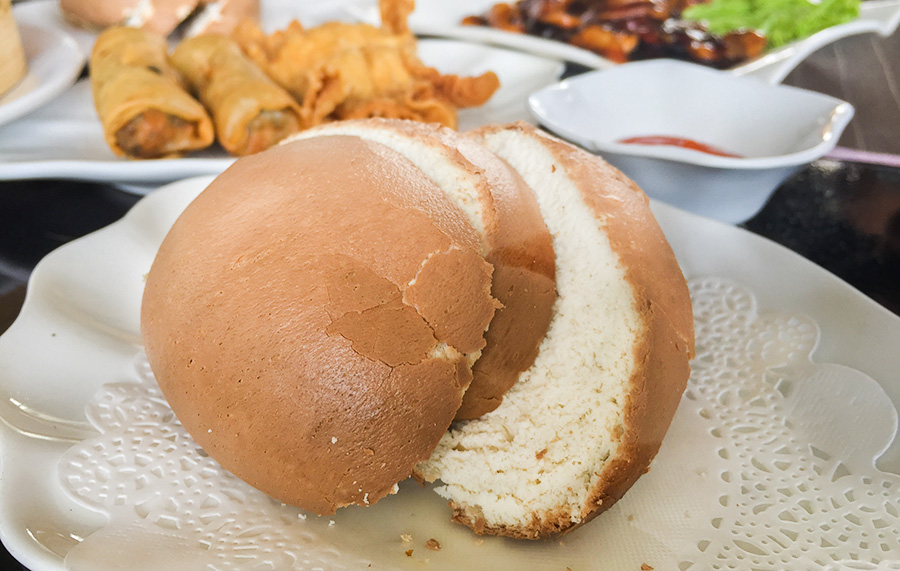
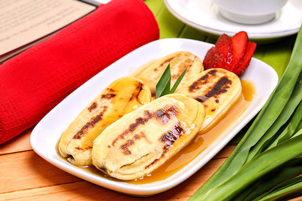
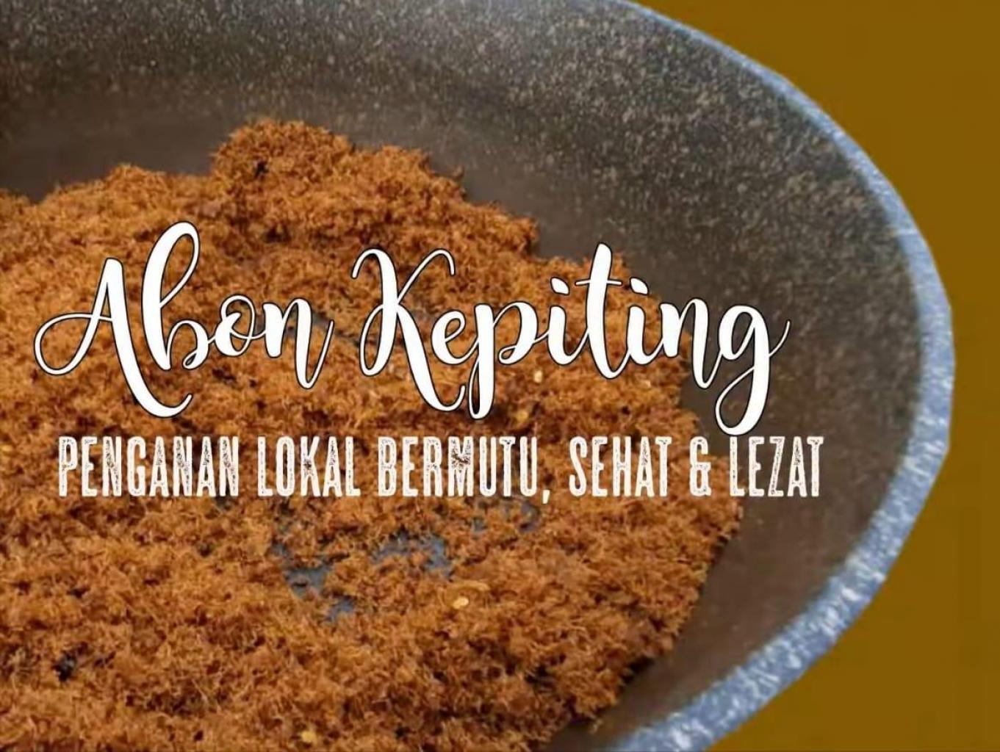

Balikpapan
Local Food
Roti Mantau
Mantau is a soft textured plain bread without filling made from selected wheat flour.

Pisang Gapit
A typical East Kalimantan food made from baked bananas and drizzled with sweet sauce.

Abon Kepiting
Balikpapan's signature dish made from crab cooked with spices and coconut milk.
